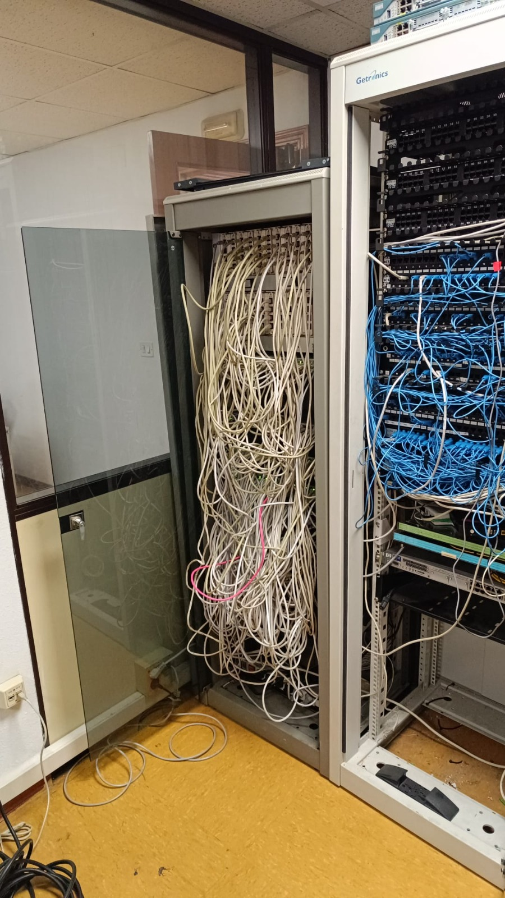
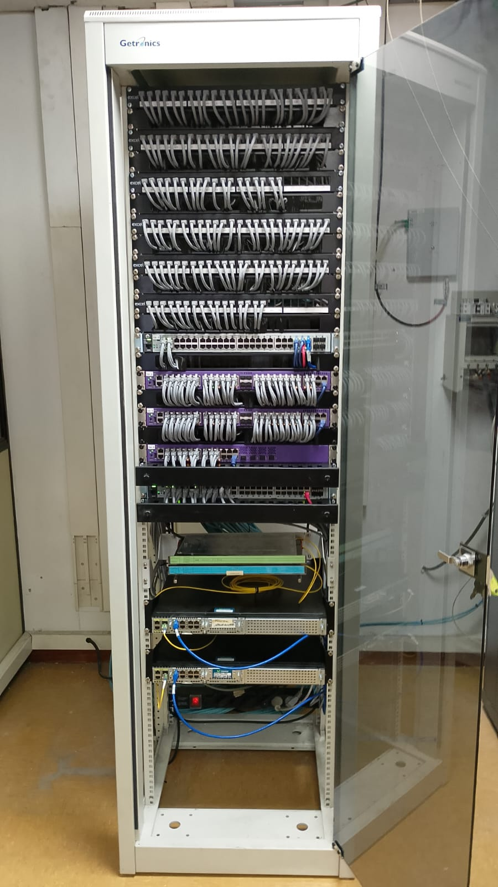
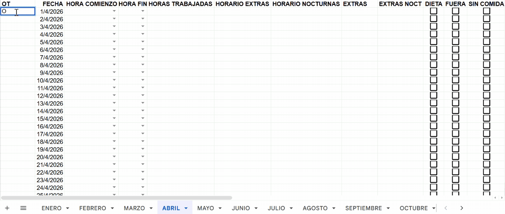

Enterprise Rack Reconditioning
(Físico/Infraestructura)


Desplegando redes críticas (CCNA) y programando ecosistemas autónomos (n8n/Python/Ollama).
↓ Selected Work
Optimización radical de procesos contables. Lógica algorítmica aplicada para eliminar la fatiga operativa y el error humano en entornos de alta densidad de datos.
Cisco, Fortinet, Palo Alto, Fiber Optics. Gestión de Racks Tier-1.
Python, n8n Workflows, Automating Worksheets & Emails.

Prompt Engineering & Local LLMs (Ollama). Private & Secure AI Deployment.
(Físico/Infraestructura)


(Lógica/n8n)

(Estrategia/Ollama)